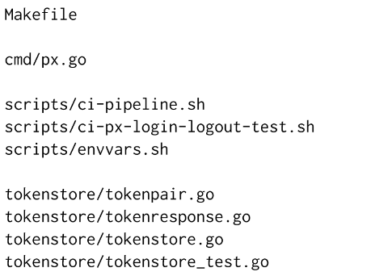
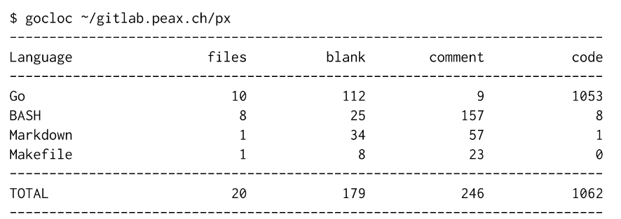

Project source folders
A source code folder is a hierarchical fle system structure that contains
- other folders (projects, modules, sub-modules, etc.), and
- files (containing source code in different languages).
One possible organization of source code folders is to create a folder for every SCM server in the home directory, e.g. github.com and gitlab.enterpriselab.ch, into the home directory. Within that directory, there is one folder for every group or project, containing multiple repositories.
This are some examples from one of the author’s laptop:
- /home/paedu/github.com/patrickbucher/reversi
- /home/paedu/github.com/patrickbucher/davi
- /home/paedu/github.com/skiapoden/kurtoid
- /home/paedu/gitlab.enterpriselab.ch/iotcourse-h19/arduino-examples
- /home/paedu/gitlab.enterpriselab.ch/iotcourse-h19/makefile-examples
The structure is always the same:
- /home/[user]/[scm-server]/[group]/[repository]
A repository folder contains other folders. This is an example from the repository px (a command line client written in the Go programming language):
The folder not only contains code written in the Go programming language, but also shell scripts, a Makefile, and some documentation written in Markdown.
Using the gocloc utility, the number of lines of code by programming/markup language can be displayed as follows:
Project idea
The idea of this project is to visualize this data in order to gain more insight:
- How big are those source folders and files in comparison?
- How much code do I write in which programming language?
- How dense is the code?